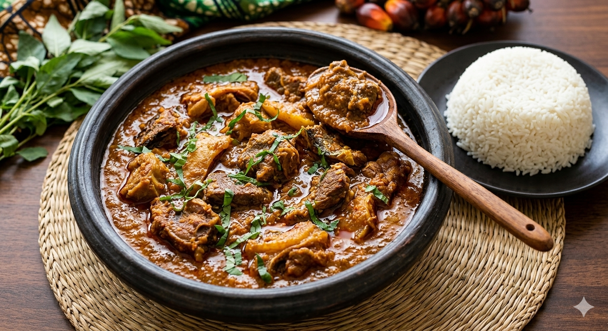

To cook Banga Stew (Ofe Akwu), first boil and pound palm fruits to extract the concentrated juice, or use a canned palm fruit base. Boil this extract until it thickens and the oil starts to rise to the surface. While it boils, add your precooked meats, dried fish, ground crayfish, blended peppers, and ogiri okpei (locust bean) for a deep, traditional aroma. In the final stage, stir in the meat stock and allow the flavors to meld over medium heat until the stew reaches a rich, oily consistency. Finish by adding freshly chopped scent leaves (nchanwu) for that signature scent and a bit of ugu if desired. Let it simmer for two more minutes before serving, typically over white rice.